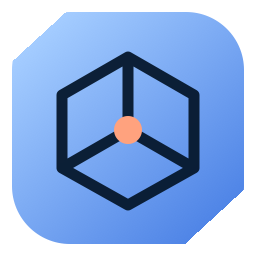

STL import
Open an STL file or start with an included demonstration model.

OML / 006 · Open source
Orbit is a browser-based STL viewer built with Three.js. It supports standard model controls and optional MediaPipe hand tracking that runs in the browser.
06A Browser-based model inspection with no server-side camera processing.
Orbit provides a focused workspace for model inspection. A user can rotate, move, scale, separate, isolate, and capture a model with direct controls.
When gesture control is enabled, MediaPipe processes webcam frames in the browser. Orbit does not send camera frames to an application server.
Open an STL file or start with an included demonstration model.
Rotate, move, and scale the model with pointer or touch input.
Use optional hand tracking for spatial model manipulation.
Explode an assembly or isolate a selected component.
Select camera presets, display options, and workspace settings.
Save the current model view as an image from the browser.
Open source
Orbit is available under the MIT License. The repository includes the browser assets, demonstration models, setup guide, and third-party notices.
Get Orbit ↗